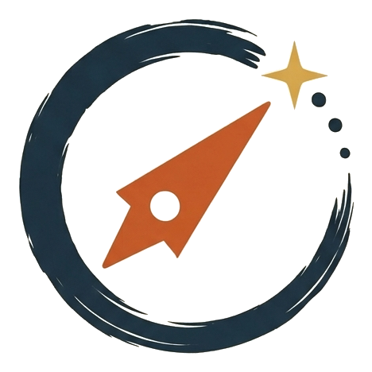
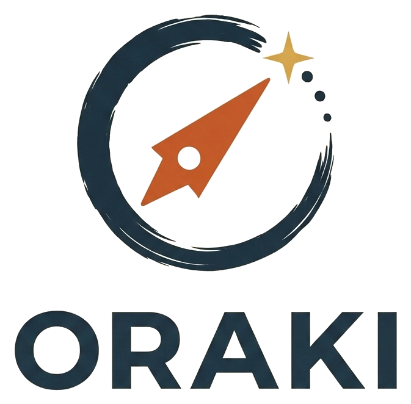
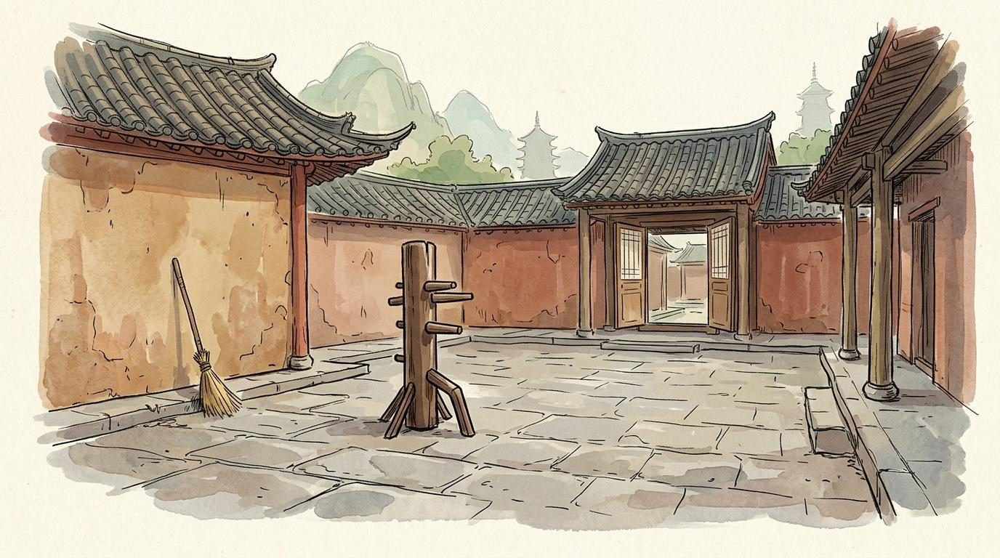

El momento que elegimos para jugar.The moment we choose to play.

Nuestro primer juegoOur first game
Shifu se fue siete días. Te dejó una nota, un templo y una gata que te juzga. Un solitario de construcción de mazo donde cada peligro que aguantás se da vuelta y se convierte en una técnica tuya. 1 jugador · 25 min.
Shifu is gone for seven days. He left you a note, a temple and a cat who judges you. A solo deck-builder where every danger you survive flips into a technique of your own. 1 player · 25 min.